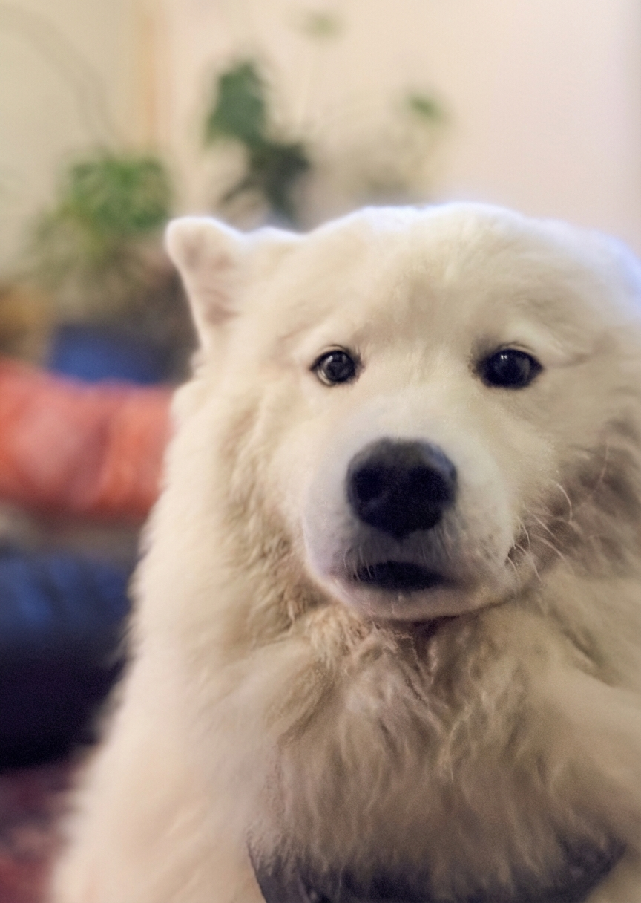

IMG_0992.jpeg
Multi-LLM Analysis
68.3/100
Consensus Score
Original Review
This is a sweet, emotive portrait that suffers primarily from soft focus and flat lighting. The editing strategy should focus on directing attention to the eyes through selective sharpening and brightening the fur to make the subject 'pop' while managing the image noise.
- Selective Sharpening and Structure
- Lift Whites and Highlights
- Luminance Noise Reduction
This is a charming, intimate pet portrait with pleasing background separation and generally solid exposure. The main gains will come from targeted sharpening/eye enhancement and better-managed noise while keeping the white fur’s highlight detail intact.
- Mask the dog (or face) and add texture/clarity (+10 to +20) with mild sharpening; apply a small radial mask on the eyes to increase exposure (+0.2), contrast (+10), and catchlight clarity
- Reduce noise primarily in the background using AI Denoise or Luminance NR (about 20–35) while preserving fur detail via masking; add slight grain back if needed (5–10) for a natural look
- Warm the white balance slightly (increase Temp modestly and add +2 to +5 magenta tint if needed) and fine-tune whites/highlights (Whites -5 to -15, Highlights -10) to keep the fur bright but detailed
This is a charming dog portrait with good composition and lighting, but suffers from overall softness and slight overexposure on the white fur. The primary focus should be sharpening the eyes to create better engagement while enhancing fur texture. The cool white balance and slight overexposure are diminishing the natural warmth and detail that would make this portrait truly shine.
- Apply targeted sharpening to the eyes and nose using unsharp mask (Amount: 80-100, Radius: 1.0-1.5px) with layer mask
- Increase clarity by +15 to +20 selectively on the dog's face to bring out fur texture definition
- Warm white balance by adjusting temperature slider +300-500K to shift from cool to neutral tones
Combined Improvements Applied:
- Selective Sharpening and Structure
- Lift Whites and Highlights
- Luminance Noise Reduction
- White Balance / Tint Correction
- Mask the dog (or face) and add texture/clarity (+10 to +20) with mild sharpening; apply a small radial mask on the eyes to increase exposure (+0.2), contrast (+10), and catchlight clarity
- Reduce noise primarily in the background using AI Denoise or Luminance NR (about 20–35) while preserving fur detail via masking; add slight grain back if needed (5–10) for a natural look
- Warm the white balance slightly (increase Temp modestly and add +2 to +5 magenta tint if needed) and fine-tune whites/highlights (Whites -5 to -15, Highlights -10) to keep the fur bright but detailed
- Crop to reduce empty space on the right/top and center the face more intentionally (or place eyes on upper third); optionally add a subtle post-crop vignette (-5 to -12)
- Apply targeted sharpening to the eyes and nose using unsharp mask (Amount: 80-100, Radius: 1.0-1.5px) with layer mask
- Increase clarity by +15 to +20 selectively on the dog's face to bring out fur texture definition
- Warm white balance by adjusting temperature slider +300-500K to shift from cool to neutral tones
- Reduce exposure by -0.3 to -0.5 stops to recover subtle detail in the white fur highlights
- Apply subtle vignette (exposure -10 to -15) to draw attention to the dog's face
Before & After Comparison